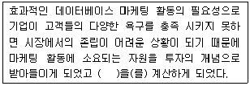
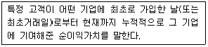
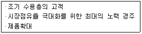
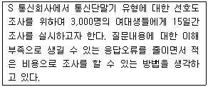
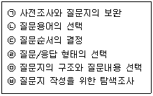
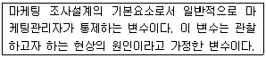
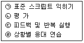
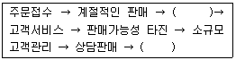
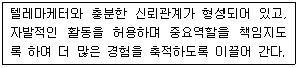

텔레마케팅관리사 (2008-03-02 기출문제)
1과목: 판매관리
1. 마케팅에 대한 설명으로 틀린 것은?
- 소비자에게 만족을 주고 이를 통해 기업의 이윤을 추구하는 활동이다.
- 유형품만을 생산자로부터 소비자에게 유통되는 과정에서 수반되는 활동을 총괄하는 것이다.
- 마케팅이란 교환과정을 통하여 인간의 욕구와 필요를 충족시키고자 하는 활동을 말한다.
- 마케팅은 제품과 서비스를 계획하고 그 가격을 결정하며, 이들의 구매 및 소비에 필요한 정보를 제공하고 유통시키는 데 소요되는 조화된 인간활동의 수행이다.
(정답률: 알수없음)

2. 고객중심의 패러다임 전환으로 기업들이 집중적인 투자를 확대하고 있는 고객에 대한 서비스와 관계가 없는 것은?
- 고객안내센터(Help Desk)의 운영
- 대규모 영역, 제품이윤에 대한 서비스
- 수신자부담서비스(080)의 제공
- 자동음성안내시스템(ARS)의 운영
(정답률: 알수없음)
3. 아웃바운드에 대한 설명 중 옳은 것은?
- 인바운드와는 달리 수동적이고 소극적인 마케팅을 전개한다.
- 고객발굴 및 판매, 제품안내, 판매촉진, 사후관리 등을 위한 기업주도형 마케팅이다.
- 고객으로부터의 문의, 항의, 주문 등을 위한 마케팅을 전개한다.
- 주로 외부에서 걸려오는 전화를 응대한다.
(정답률: 알수없음)
4. 해피콜에 대한 설명으로 틀린 것은?
- 고객과의 관계 개선을 통해 추가판매를 유도하고 고객만족도를 높여 충성 고객화한다.
- 감사전화, 서비스만족 확인전화, 캠페인 지지전화 등이 이에 해당한다.
- 해피콜의 지속적인 운영관리를 위해 대상 데이터베이스를 유지하도록 한다.
- 해피콜은 소비자와의 최종 커뮤니케이션 단계로 해피콜 이후의 조치사항은 특별히 필요 없다.
(정답률: 73%)
5. 아웃바운드 텔레마케팅에 해당하지 않는 것은?
- 대금 회수
- 고객불만 접수
- 해피콜
- 계약 갱신
(정답률: 60%)
6. 아웃바운드 텔레마케팅의 성공요소가 아닌 것은?
- 명확한 고객 데이터의 확보
- 쌍방향 의사소통을 위한 정교한 스크립트
- 주력상품, 서비스의 개발 및 제공
- 무차별적 통화를 통한 공격적 영업자세
(정답률: 알수없음)
7. 자사의 제품을 적당한 장소에서 소비자가 편리하게 구매할 수 있도록 서비스 체계를 갖춘다는 의미의 마케팅 요소는?
- Product
- Place
- Promotion
- Price
(정답률: 75%)
8. 아웃바운드 텔레마케터에게 요구되는 프로모션 능력이 아닌 것은?
- 상품 및 서비스에 대한 사전지식 숙지
- 고객에게 호감을 줄 수 있는 경청자세 기법 숙달
- 고객의 반론이나 거절에 순응하는 자세
- 고객과의 친밀한 관계형성 자세
(정답률: 66%)
9. 데이터베이스 마케팅의 정의가 아닌 것은?
- 컴퓨터에 수록된 고객 데이터베이스를 바탕으로 한다.
- 고객과의 장기적인 릴레이션 구축을 위한 활동이다.
- 고객에게 보다 질 높은 서비스를 제공하고자 한다.
- 적정 상품을 대량으로 생산하여 대량으로 판매한다.
(정답률: 73%)
10. 유통경로에 관한 설명 중 틀린 것은?
- 유통경로는 생산자로부터 소비자에게 제품이 전달되는 과정이다.
- 유통경로의 구성원들은 재화를 수송하고 저장하며, 정보를 수집한다.
- 유통경로의 길이는 중간상 수준의 수를 말한다.
- 유통경로의 서비스나 아이디어는 생산자들에게는 큰 의미가 없다.
(정답률: 알수없음)
11. 데이터베이스 마케팅의 전제조건에 대한 설명으로 틀린 것은?
- 모든 고객이 똑같지 않으며, 따라서 서로 다르게 대우를 받아야 한다.
- 상품중심의 마케팅에서 벗어나 고객중심의 마케팅체제로 변환해야 한다.
- 개별 고객이 필요로 하는 상품과 서비스를 파악하여 이를 효과적으로 제공하도록 노력해야 한다.
- 같은 고객 리스트를 대상으로 단시일 내에 반복해서 접촉하면 반응률이 증가한다.
(정답률: 67%)
12. 마케팅전략 중 기업이 제품을 개발하고, 가격을 설정하여 판매하며, 판매채널을 개발하고 판촉활동을 전개하는 것은?
- 목표시장 전략
- 표적시장 전략
- 시장세분화 전략
- 마케팅믹스 전략
(정답률: 30%)
13. 남이 아직 모르는 좋은 곳, 빈틈을 찾아 그 곳을 공략하는 마케팅전략은?
- 니치마케팅
- 마이크로마케팅
- 무점포마케팅
- 바이러스마케팅
(정답률: 47%)
14. 다음 설명 중 틀린 것은?
- 편의품은 포장이 대단히 중요하다.
- 전문품은 경로가 짧다.
- 선매품과 전문품의 이익의 폭은 높다.
- 전문품이 편의품보다 점포의 수가 더 필요하다.
(정답률: 70%)
15. 촉진전략에 관한 설명 중 틀린 것은?
- 상품에 따라 촉진믹스의 성격이 달라진다.
- 불황기에는 촉진활동보다 경로 및 가격설정전략이 주효하다.
- 마케팅 커뮤니케이션은 기업 커뮤니케이션과 연계되어 있다.
- 촉진의 본질은 소비자에 대한 정보의 전달에 있다.
(정답률: 알수없음)
16. 다음 괄호 안에 알맞은 것은?

- 자본회수율(ROI)
- 손익분기점(BEP)
- 판매시점(POS)
- R-F-M분석
(정답률: 48%)
17. 고객속성데이터에 대한 설명으로 옳은 것은?
- 주로 콜센터나 기업의 내부에서 직접 확보 또는 생성한 데이터베이스를 말한다.
- 외부 전문기관에서 구입한 명단, 제휴마케팅을 통해 획득한 데이터베이스를 말한다.
- 고객이 지닌 고유속성으로 주소, 전화번호, 주민등록번호 등의 데이터를 의미한다.
- 거래나 구매사실, 구매행동 결과로 나타나는 속성으로 회원가입일, 최초구매일, 연체내역 등의 데이터를 말한다.
(정답률: 알수없음)
18. 기존 고객의 이탈을 방지하고 제품이용도를 제고하고자 이탈고객을 대상으로 거래 단절의 원인을 조사하여 이에 대한 대책을 수립하는 마케팅 전략은?
- 다이렉트마케팅
- 리텐션마케팅
- 내부마케팅
- 로얄티마케팅
(정답률: 알수없음)
19. 다음은 무엇에 관한 설명인가?

- 고객생애가치
- 기업이미지
- 상품가치
- 고객산출가치
(정답률: 알수없음)
20. 축적된 고객관련 데이터에 숨겨진 규칙이나 패턴을 찾아내는 것은?
- DBMS
- 데이터마이닝
- 필터링
- CRM
(정답률: 53%)
21. 가격차별화의 전제조건에 관한 설명으로 틀린 것은?
- 각 시장을 세분할 수 있어야 한다.
- 각 세분시장은 수요탄력성이 달라야 한다.
- 낮은 가격으로 판매하는 시장에서 비싼 가격으로 판매하는 시장으로 제품의 이전이 가능해야 한다.
- 시장세분화의 비용보다 이익이 더 커야 한다.
(정답률: 79%)
22. 다음은 제품수명주기 중 무엇에 관한 설명인가?

- 도입기
- 성장기
- 성숙기
- 쇠퇴기
(정답률: 55%)
23. 다음 중 가격결정에 있어서 상대적으로 고가가격이 적합한 경우가 아닌 것은?
- 수요의 탄력성이 높을 때
- 진입장벽이 높아 경쟁기업이 자사 제품의 가격만큼 낮추기가 어려울 때
- 규모의 경제효과를 통한 이득이 미미할 때
- 높은 품질로 새로운 소비자층을 유인하고자 할 때
(정답률: 알수없음)
24. 아웃바운드 텔레마케팅의 판매촉진 강화를 위한 방안이 아닌 것은?
- 상담원은 고객의 요구만을 열심히 경청하게 한다.
- 상담원들에게 상품에 대한 사전지식을 철저히 준비하도록 한다.
- 고객에게 호감을 줄 수 있는 커뮤니케이션 기술을 갖추도록 한다.
- 상담원은 고객의 반론에 대한 자연스러운 대응력을 갖추도록 한다.
(정답률: 알수없음)
25. 시장세분화의 전제조건이 아닌 것은?
- 측정가능성
- 접근가능성
- 동질성
- 수행가능성
(정답률: 70%)
2과목: 시장조사
26. 개방형 질문의 유형에 해당하지 않는 것은?
- 자유응답 질문
- 투사기법 질문
- 문장완성형 질문
- 척도형 질문
(정답률: 67%)
27. 텔레마케터가 응답자에게 질문을 할 때 고려해야 할 사항으로 옳은 것은?
- 응답자들의 교육수준에 상관없이 동일한 질문을 주고 응답을 받아야 한다.
- 응답할 항목을 불러줄 때 “기타”나 “모르겠다”는 항목을 절대 말해서는 안 된다.
- 질문을 할 때 가능하면 전문용어를 많이 사용하도록 한다.
- 응답자에게 질문 초기에는 친밀감이 형성될 수 있도록 하는 것이 좋다.
(정답률: 알수없음)
28. 전화조사시 고려하여야 할 사항으로 틀린 것은?
- 조사시간대는 응답자가 불편을 느끼지 않는 평일 오전이나 오후가 적당하다.
- 전화조사에 적당한 시간은 10분 내외로 10개 전후의 문항으로 한다.
- 전화조사시 질문은 질문지와 최대한 유사하게 질문하며 질문지에 나타난 순서대로 질문한다.
- 조사원은 조사대상자의 답변을 그대로 기록하기보다는 적절히 요약, 정리, 의역, 부연설명을 할 수 있다.
(정답률: 46%)
29. 시장조사에 대한 설명으로 옳은 것은?
- 시장조사에 있어 특정한 분석모델은 없다.
- 시장조사는 고객의 욕구와 문제를 파악하고, 성장기회를 포착하기 위해 이용된다.
- 시장조사의 분석자료는 의사결정에만 이용된다.
- 시장조사는 상품이 완성된 후 실시한다.
(정답률: 90%)
30. 관찰조사에 대한 설명으로 옳은 것은?
- 가장 기본적인 시장조사 방법으로 공개되어 있는 자료에서 필요한 정보만을 얻는다.
- 시각적으로 알 수 있는 내용을 수집하는 방법이다.
- 직접 조사대상자를 방문 또는 전화를 해서 조사하는 방법이다.
- 정부나 일반 연구기관에서 경제동향을 조사할 때 주로 쓰이는 방법이다.
(정답률: 30%)
31. 조사보고서의 작성 목적으로 적절하지 않은 것은?
- 조사자와 조사대상자 간의 의사소통
- 통제수단
- 타당성 검증
- 결과활용
(정답률: 알수없음)
32. 표본의 크기를 결정하는 데 고려해야 하는 요소 중 적절하지 않은 것은?
- 비표집 오차
- 모집단 요소의 동질성
- 조사의 목적
- 모집단의 크기
(정답률: 50%)
33. 다음은 어떤 조사유형에 관한 설명인가?

- 일대일 면접조사
- 전화조사
- 집단설문조사
- 우편조사
(정답률: 60%)
34. 시장조사에 활용되는 측정척도에 대한 설명으로 틀린 것은?
- 명목척도는 숫자에 의해 양적인 개념이 전혀 내포되어 있지 않으며 단지 확인과 분류에 관한 정보만을 내포한다.
- 서열척도는 순서(순위, 등급)에 대한 정보를 포함하는 자료이다.
- 등간척도는 명목자료와 서열자료에 포함된 정보와 측정값 간의 양적 차이에 관한 정보를 포함 한다.
- 비율척도는 모든 산술계산이 가능하며, 절대영점이 존재하지 않는 유일한 척도이다.
(정답률: 50%)
35. “본 제품을 처음으로 사용하게 된 계기는 무엇입니까?”라는 식으로 응답자가 질문에 대해 자신의 의견을 제약 없이 표현할 수 있도록 해주는 질문형태는?
- 자유응답형 질문
- 다지선다형 질문
- 양자택일형 질문
- 집단토의형 질문
(정답률: 50%)
36. 전화조사에서 응답률(Response Rate)의 의미로 옳은 것은?
- 전화를 걸었을 때 신호가 가는 비율
- 전화를 걸었을 때 누군가 받는 비율
- 전화를 걸었을 때 조사대상자가 받는 비율
- 전화를 걸었을 때 원하는 정보를 얻어내는 비율
(정답률: 10%)
37. 다음 중 종단조사의 특징이 아닌 것은?
- 목적 - 시간 흐름에 따른 변화·추세분석
- 성격 - 정태적
- 표본 - 패널
- 결론도출 - 측정결과에서 직접 도출
(정답률: 알수없음)
38. 다음 질문지 작성 단계를 바르게 나열한 것은?

- (ㄱ) → (ㄴ) → (ㄷ) → (ㄹ) → (ㅁ) → (ㅂ)
- (ㄹ) → (ㄴ) → (ㄷ) → (ㄱ) → (ㅁ) → (ㅂ)
- (ㅂ) → (ㅁ) → (ㄹ) → (ㄷ) → (ㄴ) → (ㄱ)
- (ㄷ) → (ㄹ) → (ㄱ) → (ㄴ) → (ㅁ) → (ㅂ)
(정답률: 알수없음)
39. 다음 중 탐색조사의 종류에 해당하지 않는 것은?
- 종단조사
- 경험조사
- 사례조사
- 문헌조사
(정답률: 40%)
40. 표본추출을 할 때 가장 먼저 해야 할 사항은?
- 모집단 규정
- 표본크기 산출
- 표본체계 확인
- 표본할당
(정답률: 64%)
41. 구매관련 자료 수집을 위한 횡단조사의 조사항목으로 적절하지 않은 것은?
- 고객 개인정보
- 선호 상표
- 구매의사
- 상표 및 광고 인지도
(정답률: 알수없음)
42. 표본조사와 전수조사에 대한 설명으로 옳은 것은?
- 모집단 내에 대상자의 수가 너무 많을 경우 표본조사를 한다.
- 전수조사가 표본조사보다 항상 오류가 없으나 비용이 많이 들어서 표본조사를 한다.
- 마케팅 부서는 항상 전수조사를 선호한다.
- 표본조사는 조사결과에 심각한 오류가 많아 기피된다.
(정답률: 알수없음)
43. 다음은 무엇에 관한 설명인가?

- 결과변수
- 종속변수
- 외생변수
- 독립변수
(정답률: 알수없음)
44. 이처럼 동시에 집단으로 조사하는 방식은?
- 신디케이트 조사
- 회장법
- 갱서베이
- 소비자패널조사
(정답률: 16%)
45. 리스트 클리닝 활용 증대를 위한 전략적 방안과 제반요소가 아닌 것은?
- 리스트 클리닝 목적의 명확화
- 리스트 클리닝 대상 데이터 확보
- 리스트 클리닝 데이터 업데이트 금지
- 리스트 클리닝 연계 마케팅 툴
(정답률: 64%)
46. 최근 전화조사에 있어서 설문지 대신 컴퓨터에 설문을 입력해 놓고 면접원이 질문을 보면서 면접하고 응답을 바로 입력하는 방법은?
- CATI(Computer Aided Telephone Interviewing)
- Internet Survey
- Call Center
- Mail Survey
(정답률: 55%)
47. 사전조사에 대한 설명으로 틀린 것은?
- 설문지의 내용이 적절하게 배치되어 있는가를 체크할 수 있다.
- 본 조사를 위하여 응답자의 장소, 조사장소의 분위기, 응답에 필요한 시간, 응답자 표본의 크기 등이 적절한가를 검토한다.
- 사전조사는 가급적 간접조사 방식을 취한다.
- 사전조사로 파악된 응답자의 의견을 반영하여 조사의 문제점을 보완, 수정한다.
(정답률: 79%)
48. 마케팅조사와 마케팅정보시스템의 비교 설명으로 틀린 것은?
- 마케팅조사는 문제해결에 초점을 맞추고, 마케팅정보시스템은 문제해결 및 문제예방에도 초점을 맞춘다.
- 정보와 자료에 있어서 마케팅조사는 미래지향적이고, 마케팅정보시스템은 과거중심적이다.
- 마케팅조사는 마케팅정보시스템에 정보를 제공하는 하나의 자료원이다.
- 마케팅정보시스템은 경영정보시스템 개념을 도입하여 마케팅 분야에 적합하도록 수정하였다.
(정답률: 알수없음)
49. 자료수집방법 중 정보를 가장 빨리 입수하는 것은?
- 우편질문방법
- 전화면접방법
- 대인면접방법
- 대리질문방법
(정답률: 65%)
50. 다음 중 비확률 표본추출방법에 해당하는 것은?
- 단순무작위표본추출법
- 층화표본추출법
- 군집표본추출법
- 판단표본추출법
(정답률: 32%)
3과목: 텔레마케팅관리
51. 콜센터 조직의 특성으로 맞는 것은?
- 기업 중심적이다.
- 고객의 가치를 중시한다.
- 1：1 대면 접촉이다.
- 정보와 커뮤니케이션을 매개로 하지 않는다.
(정답률: 42%)
52. 콜센터의 역할로 틀린 것은?
- 고객접점 센터이다.
- 고객중심의 마케팅을 전개한다.
- 전화, 우편, 이메일 등 다양한 매체중심의 마케팅을 전개한다.
- 고객봉사센터라고 할 수 있다.
(정답률: 70%)
53. OJT의 설명으로 틀린 것은?
- OJT는 사내직업훈련이다.
- OJT 리더는 피교육자의 문제점 및 건의사항을 수렴한다.
- 실무에 투입되기 전 평가결과에 따라 피드백한다.
- 현장적응훈련이다.
(정답률: 알수없음)
54. 역할연기 연습의 진행단계로 맞는 것은?

- (ㄱ) → (ㄹ) → (ㄴ) → (ㄷ)
- (ㄱ) → (ㄷ) → (ㄹ) → (ㄴ)
- (ㄷ) → (ㄴ) → (ㄱ) → (ㄹ)
- (ㄱ) → (ㄴ) → (ㄹ) → (ㄷ)
(정답률: 알수없음)
55. 다음 괄호 안에 알맞은 것은?

- 갱신, 전체 고객관리
- 직접 판매, 문제점 해결
- 구매고객 확인, 무료서비스
- 욕구 파악, 대금 청구
(정답률: 알수없음)
56. 다음은 콜센터 리더의 유형 중 무엇에 관한 설명인가?

- 지시형 리더
- 위양형 리더
- 지원형 리더
- 참가형 리더
(정답률: 20%)
57. 텔레마케팅에 대한 설명으로 맞는 것은?
- 텔레마케팅은 정보처리기술을 바탕으로 이루어진다.
- 텔레마케팅은 대면 접촉에 적합하다.
- 텔레마케팅은 단방향 커뮤니케이션으로 이루어진다.
- 텔레마케팅은 통제가 어려운 매체이다.
(정답률: 59%)
58. 인바운드 텔레마케팅의 특성이 아닌 것은?
- 시간관리가 용이하다.
- 통화량을 조절하기 어렵다.
- 불만고객에 의한 스트레스가 크다.
- 상품에 대한 충분한 지식이 필요하다.
(정답률: 알수없음)
59. 모니터링의 목적이 아닌 것은?
- 상담원의 통화품질 평가
- 상담원의 스킬 향상
- 고객만족과 로열티·수익성 향상을 위한 관리수단
- 상담원의 실적관리 및 통제수단
(정답률: 47%)
60. 텔레마케팅 조직의 슈퍼바이저 역할에 대한 설명으로 틀린 것은?
- 일반적으로 10~15명의 텔레마케터를 1명의 슈퍼바이저가 관리한다.
- 모니터링을 통해 텔레마케터의 성과를 분석한다.
- 텔레마케터의 능력계발을 위한 교육을 지원한다.
- 콜 예측을 통한 신규인력 투입시기를 결정한다.
(정답률: 알수없음)
61. 콜센터에서 사용되는 하드웨어에 대한 용어 설명으로 옳은 것은?
- CTI - 녹취장비
- PBX - 사내전화 교환기
- UMS - 자동호 분배기
- UPS - 음성메일 시스템
(정답률: 37%)
62. 모니터링 평가요소가 아닌 것은?
- 음성의 친절성
- 업무의 정확성
- 응대의 신속성
- 근무태도의 성실성
(정답률: 알수없음)
63. 텔레마케팅의 특성이 아닌 것은?
- 텔레마케팅은 시간, 공간, 거리의 장벽을 극복할 수 있다.
- 텔레마케팅은 고객의 생애가치를 존중한다.
- 텔레마케팅은 고객관계보다 고객획득에 적합한 마케팅이다.
- 텔레마케팅은 기업을 정보창조조직으로 만들지만 시스템적 사고로 접근할 필요는 없다.
(정답률: 77%)
64. 동기부여 중심의 OJT 교육내용에 해당하지 않는 것은?
- 칭찬하기
- 신뢰감 표시
- 직무 축소
- 실패의 위로
(정답률: 알수없음)
65. 상담원 OJT의 절차가 맞는 것은?
- 니즈의 간파 → 목표설정 → 계획서 작성 → 실시 → 평가와 피드백
- 목표설정 → 니즈의 간파 → 계획서 작성 → 실시 → 평가와 피드백
- 계획서 작성 → 목표설정 → 니즈의 간파 → 실시 → 평가와 피드백
- 계획서 작성 → 니즈의 간파 → 목표설정 → 실시 → 평가와 피드백
(정답률: 알수없음)
66. 모니터링 성공요소가 아닌 것은?
- 대표성
- 주관성
- 신뢰성
- 유용성
(정답률: 65%)
67. 고객불평처리의 중요성에 대한 설명으로 틀린 것은?
- 고객불평을 잘 처리하면 고객유지율이 향상된다.
- 고객불평의 해결은 기업이윤을 감소시키는 요인이 된다.
- 경영에 유용한 정보를 얻게 된다.
- 기업의 좋은 이미지를 구축할 수 있다.
(정답률: 알수없음)
68. 고객의 불만에 대한 응답편지 작성 및 발송시의 유의사항이 아닌 것은?
- 편지를 쓸 목적을 분명히 한다.
- 무엇을 쓸 것인가를 5W 1H로 요약한다.
- 일반우편으로 발송한다.
- 편지는 고객입장에서 작성한다.
(정답률: 53%)
69. 텔레마케팅의 아웃소싱업체 선정시 유의할 사항이 아닌 것은?
- 콜센터 아웃소싱업체가 인바운드 텔레마케팅 성향이 강한지, 아웃바운드 텔레마케팅 성향이 강한지 해당 업체의 특성을 고려해야 한다.
- 아웃소싱업체의 고객 데이터베이스 관리의 신뢰성 정도를 반드시 점검해야 한다.
- 아웃소싱업체의 상담원의 자질이 어떠한지를 평가하여야 하며, 편차가 심할 경우 업체 선정을 고려해야 한다.
- 규모가 큰 아웃소싱업체를 선정하는 것이 가장 효율적이고, 콜생산성을 높일 수 있다.
(정답률: 50%)
70. 콜센터 조직구성의 원칙과 거리가 먼 것은?
- 콜센터 조직의 구성원은 가능한 한 한 가지 특수한 전문화된 업무만을 담당할 때 효율성과 생산성이 더욱 향상될 수 있다.
- 상담원은 라인에 따라 한 사람의 상사로부터 명령이나 지시를 받아야 업무지침의 혼란과 조직관리의 혼선을 방지할 수 있다.
- 콜센터에서 리더는 누구에게나 리더십을 발휘하여 모든 상담원을 지휘·감독할 수 있어야 한다.
- 콜센터 내 조직원들에게 보다 명확한 업무분장과 수행에 따른 적정한 권한의 부여가 이루어져야 한다.
(정답률: 알수없음)
71. 다음 중 고객상황의 설명으로 틀린 것은?
- 고객상황이란 고객이 지니고 있는 가치, 신념, 니즈, 행동과 관련한 상황을 말한다.
- 고객의 니즈는 고객의 요구상황과 욕구상황으로 이루어진다.
- 고객의 욕구상황은 고객입장에서 객관적인 관점이나 행동을 요청하는 것을 말한다.
- 고객의 상황은 생성주체, 우호성 정도, 고객가치평가, 소속개체에 따라 분류한다.
(정답률: 19%)
72. 텔레마케터에게 요구되는 자질이 아닌 것은?
- 기업의 이미지 향상을 위해 최선을 다한다.
- 회사의 업무와 상품 내용을 숙지한다.
- 전화통화의 내용을 가능한 간략하게 기록한다.
- 고객과 우호적인 관계를 갖는다.
(정답률: 알수없음)
73. 다음 중 콜센터 인력산출에 있어 사용되지 않는 수학적 모델은?
- Erlang A
- Erlang B
- Erlang C
- Equivalent Random Theory
(정답률: 알수없음)
74. 다음 중 중앙집중형 콜센터의 특징이 아닌 것은?
- 관리가 용이함
- 지역사정에 밝음
- 효율적인 자원사용
- 낮은 운영비용
(정답률: 28%)
75. 텔레마케팅의 정의와 거리가 먼 것은?
- 쌍방향으로 이루어지는 공감적인 커뮤니케이션 기법이다.
- 다양한 고객접점채널을 융합하는 새로운 커뮤니케이션 기법이다.
- Product, Price, Place, Promotion의 수단을 활용하는 첨단 비즈니스이다.
- CRM 속성과 고객심리적 속성을 복합적으로 활용하는 마케팅 기법이다.
(정답률: 알수없음)
4과목: 고객응대
76. 좋은 발성의 기본자세가 아닌 것은?
- 아랫배에 약간 힘을 주고 다소 긴장한다.
- 업무에 임하기 전에 좋은 발성을 위한 준비를 한다.
- 몸의 중심을 발끝에 두고 힘이 편중되지 않도록 한다.
- 선천적으로 음성이 좋으면 발성에 주의하지 않아도 된다.
(정답률: 알수없음)
77. 서비스평가의 측정요소가 아닌 것은?
- 신뢰성
- 응대성
- 확신성
- 허구성
(정답률: 82%)
78. 고객특성에 따른 응대법으로 적절하지 않은 것은?
- 과장되게 말을 잘하는 사람은 콤플렉스를 감추고 있는 사람으로 어디까지가 진의인지 파악하고 말보다 객관적인 자료로 대응한다.
- 빈정거리기를 잘하는 사람은 열등감과 허영심이 강한 사람이므로 자존심을 존중해 주면서 대한다.
- 생각에 생각을 거듭하는 사람은 신중하나 판단력이 부족하므로 먼저 결론을 내는 화법이 좋다.
- 말의 허리를 자르는 사람은 이기적 성격의 소유자로 반론하지 말고 질문식 설득화법으로 대응한다.
(정답률: 알수없음)
79. 커뮤니케이션의 기능으로 맞는 것은?
- 정확한 정보를 얻기 위해서는 무조건적인 경청훈련을 해야 한다.
- 조직 내에서 의사결정을 하는 데 중요한 역할을 한다.
- 외국어는 중요한 정보획득 수단으로 볼 수 없다.
- 설득은 커뮤니케이션 기능으로 볼 수 없다.
(정답률: 알수없음)
80. 대인커뮤니케이션의 구성 요소가 아닌 것은?
- 상품과 가격
- 발신자와 수신자
- 기호화와 해독
- 메시지와 채널
(정답률: 39%)
81. 우수한 고객응대를 통한 기업의 이득이 아닌 것은?
- 고객만족과 직원만족
- 고객의 재구매
- 경쟁기업의 성장
- 기업에 대한 긍정적 이미지 형성
(정답률: 64%)
82. 고객에게 긍정적인 이미지를 심어 주기 위한 텔레마케터의 능력과 관련이 없는 것은?
- 자신감
- 전문성
- 신뢰감
- 우월감
(정답률: 46%)
83. 주문 접수처리 업무의 특성에 대한 설명으로 옳은 것은?
- 일반적으로 홈쇼핑, 카탈로그쇼핑 업체에서 많이 이루어진다.
- 상품구매 고객의 불만사항을 접수하는 역할로만 주로 한다.
- 연결된 통화의 품질 유지가 우선이며 이를 위해서는 때로는 들어오는 통화 중 일부를 포기하는 것이 바람직하다.
- 고객이 주도하는 전화이므로 초보적인 상담원도 문제없이 처리할 수 있는 업무이다.
(정답률: 73%)
84. 서비스 품질에 대한 설명으로 옳은 것은?
- 서비스는 눈에 보이지 않는 것이므로 품질을 측정할 수 없다.
- 서비스는 모든 고객에게 적용 가능한 절대적 품질 수준이 존재한다.
- 서비스 품질 수준에 대한 산업별 기준 값이 존재한다.
- 서비스 품질은 고객이 기대하는 기대 수준 대비 고객이 느끼는 성과에 의해 측정된다.
(정답률: 55%)
85. 고객을 가치관점에서 해석할 때 해당되지 않는 것은?
- 내부고객
- 창조고객
- 미래고객
- 최종고객
(정답률: 0%)
86. 성공적인 텔레마케팅 활동이 되기 위해 미리 준비해야 할 사항이 아닌 것은?
- 고객정보 입력 및 수정
- 예상질문과 답변
- 적정한 구매 제품의 범위
- 정확한 제품지식과 정보
(정답률: 알수없음)
87. 고객이 기업과 만나는 모든 장면에서 기업에 대한 고객의 경험과 인지에 영향을 미치는 결정적인 순간을 의미하는 것은?
- CRM(Customer Relationship Management)
- MOT(Moment of Truth)
- MIS(Marketing Information System)
- CSM(Customer Satisfaction Management)
(정답률: 40%)
88. 커뮤니케이션 채널에 대한 설명으로 틀린 것은?
- 커뮤니케이션 채널은 발신자가 수신자에게 메시지를 전달하는 데 사용되는 수단을 말한다.
- 커뮤니케이션 채널은 크게 인적 채널과 비인적 채널로 나누어진다.
- 인적 채널은 발신자와 수신자 사이의 직접적인 접촉을 통한 커뮤니케이션 방법으로 대중매체와 인터넷과 같은 다이렉트 마케팅 도구들이 포함된다.
- 비인적 채널은 발신자와 수신자 사이의 직접적인 접촉이 없이 메시지가 전달되는 방법으로 인쇄매체, 방송매체 등이 포함된다.
(정답률: 30%)
89. CTI(Computer Telephony Integration) 솔루션의 도입시 이점으로 틀린 것은?
- 컴퓨터와 콜을 처리하는 교환기가 상호 연결되어 각종 콜과 데이터베이스와 연동이 가능하게 되 었다.
- CTI 도입으로 고객에게 자동으로 전화를 걸고 해당 고객의 정보를 상담원의 화면에 나타내 줌으로써 공격적인 마케팅이 가능하게 되었다.
- 상담 내용이 자동으로 모니터링되어 업무효율성을 높일 수 있게 되었다.
- 콜을 균등하게 연결해 주는 ACD(Automatic Call Distribution) 기능이 가능하게 되었다.
(정답률: 알수없음)
90. 전화받는 요령으로 틀린 것은?
- 신호가 세 번 울리기 전에 수화기를 든다.
- 수화기를 들고 전화를 건 상대방이 누구인지 먼저 묻는다.
- 전화를 받는 사람의 이름을 밝힌다.
- “무엇을 도와드릴까요?”라고 묻는다.
(정답률: 알수없음)
91. 불만족 고객의 심리상태에 관한 설명으로 틀린 것은?
- 자신의 말을 들어주길 원한다.
- 감정적이고 분노하고 있다.
- 모든 것에 대해 수용적이다.
- 심리적으로 보상받기를 원한다.
(정답률: 58%)
92. 고객유형 중 “합리적인 형”인 고객의 행동경향이 아닌 것은?
- 인내심이 강하다.
- 자신의 의견을 말하기보다는 질문을 한다.
- 질문에 대한 답을 얻고자 할 경우 긴 대화를 계속해야 한다.
- 질문에 대한 구체적이고 완전한 설명을 추구한다.
(정답률: 16%)
93. R-F-M 분석에 대한 설명으로 적합하지 않은 것은?
- 최근 구매일(Recency) - 고객이 최근 구매한 날로부터 얼마나 지났는지 측정하는 항목
- 구매빈도(Frequency) - 정해진 기간 내에 각 고객이 얼마나 많이 구매했는지 측정하는 항목
- 구입금액(Monetary) - 고객이 구매시 평균적으로 얼마나 많은 돈을 지불하는지 측정하는 항목
- 구매횟수(Recency) - 고객이 최근에 몇 번이나 자사의 제품이나 서비스를 구매했는지를 측정하는 항목
(정답률: 54%)
94. 일반적 커뮤니케이션 유형에 관한 특성이 아닌 것은?
- 지배적인 성향을 가진 사람 - 시간과 돈을 절약할 수 있는 독특한 신제품과 서비스를 좋아한다.
- 영향력을 행사하고 싶어 하는 사람 - 자신을 돋보이게 만들어 주는 제품이나 서비스를 선호한다.
- 꾸준하게 일하는 사람 - 제품이나 서비스가 어떤 혜택을 줄 수 있는지에 관심을 갖는다.
- 꼼꼼하고 정확한 사람 - 제품이나 서비스에 대하여 항상 ‘무엇’에 대한 질문을 한다.
(정답률: 40%)
95. 고객에게 제품이나 서비스를 설명하는 방법으로 틀린 것은?
- 고객의 상황을 파악해가면서 정확하게 핵심을 전달한다.
- 전달하고자 하는 핵심 내용을 간략하게 말한다.
- 구체적으로 정확한 수치나 관련 사례를 들어가며 설명한다.
- 제품이나 서비스의 특성을 전문용어를 사용하여 설명한다.
(정답률: 알수없음)
96. 서비스의 특성에 대한 설명으로 틀린 것은?
- 서비스는 재고형태로 보존할 수 없다.
- 서비스는 동질적이다.
- 서비스 생산에는 고객이 참여하게 된다.
- 서비스를 제공받기 전에는 서비스의 품질을 인식할 수 없다.
(정답률: 42%)
97. 기존고객의 응대 포인트가 아닌 것은?
- 고객의 심리 변화를 활용
- 기존고객의 개인적인 성향을 응대에 적극 활용
- R-F-M 특성 분석을 대화의 소재로 활용
- 고객기여도 등 배려를 소홀히 하지 않는 고객응대
(정답률: 0%)
98. 비즈니스 커뮤니케이션의 7C 원칙 중 Clarity (명확하게)에 대한 설명이 아닌 것은?
- 짧고 친숙한 대화체로 말할 것
- 이해하기 쉬운 말로 말할 것
- 생생한 이미지를 묘사할 수 있는 어휘로 말할 것
- 실제 사례를 적절히 활용하여 말할 것
(정답률: 알수없음)
99. 억양을 좀 더 세련되게 다듬기 위한 방법이 아닌 것은?
- 전화로 이야기할 때도 미소를 짓는다.
- 필요한 낱말에 강세를 두는 법을 연습한다.
- 제스처를 활용한다.
- 호흡은 짧고, 빠르게 한다.
(정답률: 46%)
100. 서비스는 기업, 종업원, 상황에 따라 달라질 수 있는 이질적인 특성을 가지고 있다. 고객이 이 다양성을 지각하고 기꺼이 받아들일 수 있는 한계를 무엇이라 하는가?
- 필 요
- 욕 구
- 기대서비스
- 허용구간
(정답률: 알수없음)